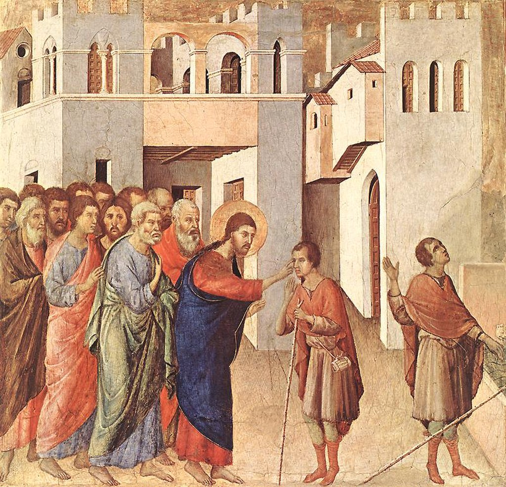

<head>
<meta charset="UTF-8" />
<meta name="keywords" content="drawing, painting" />
<meta name="description" content="drawings by Sunjy" />
<title>Sunjy</title>
<link rel="shortcut icon" type="image/x-icon" href="../../mImages/mCommon/favicon.ico" media="screen" />
<link rel="stylesheet" type="text/css" href="../../mCsses/mCommon/mCssA.css" />
<link rel="stylesheet" type="text/css" href="../../mCsses/mCommon/mCssB.css" />
<link rel="stylesheet" type="text/css" href="../../mCsses/mCommon/mCssC.css" />
<link rel="stylesheet" type="text/css" href="../../mCsses/mCommon/mCssD.css" />
<link rel="stylesheet" type="text/css" href="../../mCsses/mContent/mCssA.css" />
<link rel="stylesheet" type="text/css" href="../../mCsses/mContent/mCssB.css" />
<link rel="stylesheet" type="text/css" href="../../mCsses/mContent/mCssC.css" />
<link rel="stylesheet" type="text/css" href="../../mCsses/mContent/mCssD.css" />
</head>
<script type="text/javascript" src="../../mScripts/mContent/mContentAA.js" /></script>
<script type="text/javascript" src="../../mScripts/mContent/mContentAB.js" /></script>
<script type="text/javascript" src="../../mScripts/mContent/mContentAC.js" /></script>
<script type="text/javascript" src="../../mScripts/mContent/mContentAD.js" /></script>
<script type="text/javascript"></script> 
<script type="text/javascript">
document.write('<div class="mImgAbsolute"></div>');
/*
document.write('<p class="mFontSizeBColor" />From a white paper...</p>');
document.write('<table class="center"><tr><td>');
document.write('');
document.write('</td></tr></table>');
*/
</script>


<script type="text/javascript">
document.write('<p class="mFontSizeBColor" />The Healing of the Man Born Blind</p>');
document.write('<p class="mFontSizeSColor" />“The Healing of the Man Born Blind” by Duccio shows Christ in the center of the scene, and the blind man is shown twice in the composition.<br><br>The man is shown being touched by Christ on his eyes, and then the man is shown looking up with his sight restored and dropping his guiding stick on the right of the canvas.<br><br>The two episodes are linked visually by the blind man’s rod. This painting is an early example of how Italian artists began leading the move away from the traditions of Byzantine art.<br><br>Duccio started by making people’s faces, hands, and feet more expressive and realistic. Duccio introduced warmer colors and attempts at portraying the perspective of the background architecture.<br><br>This was one of the scenes on the back predella named Duccio’s ‘Maestà.’ The back predella illustrated scenes from Christ’s life and ministry. <br><br>The Maestà of Duccio is an altarpiece composed of many individual paintings commissioned by the city of Siena in 1308 from the artist Duccio di Buoninsegna.<br><br>This panel was initially positioned to the left of “The Transfiguration,” thus, the blind man was looking with his newly restored sight at a vision of Christ transfigured.<br><br>The ‘Maestà’ is a double-sided altarpiece in which the front panels show the enthroned Madonna and Child with saints and angels, and a predella of the Childhood of Christ with prophets.<br><br>The reverse of the panel has the rest of the cycle of the Life of the Virgin and the Life of Christ. A total of forty-three small scenes. <br><br>Duccio’s Maestà set Italian painting founded on Byzantine art towards more realistic presentations.<br></p>');
document.write('<table class="center" /><tr><td>');
document.write('<br>The man is shown being touched by Christ on his eyes, and then the man is shown looking up with his sight restored and dropping his guiding stick on the right of the canvas.<br><br>The two episodes are linked visually by the blind man’s rod. This painting is an early example of how Italian artists began leading the move away from the traditions of Byzantine art.<br><br>Duccio started by making people’s faces, hands, and feet more expressive and realistic. Duccio introduced warmer colors and attempts at portraying the perspective of the background architecture.<br><br>This was one of the scenes on the back predella named Duccio’s ‘Maestà.’ The back predella illustrated scenes from Christ’s life and ministry. <br><br>The Maestà of Duccio is an altarpiece composed of many individual paintings commissioned by the city of Siena in 1308 from the artist Duccio di Buoninsegna.<br><br>This panel was initially positioned to the left of “The Transfiguration,” thus, the blind man was looking with his newly restored sight at a vision of Christ transfigured.<br><br>The ‘Maestà’ is a double-sided altarpiece in which the front panels show the enthroned Madonna and Child with saints and angels, and a predella of the Childhood of Christ with prophets.<br><br>The reverse of the panel has the rest of the cycle of the Life of the Virgin and the Life of Christ. A total of forty-three small scenes. <br><br>Duccio’s Maestà set Italian painting founded on Byzantine art towards more realistic presentations.<br>" />');
document.write('</td></tr></table>');
</script>


